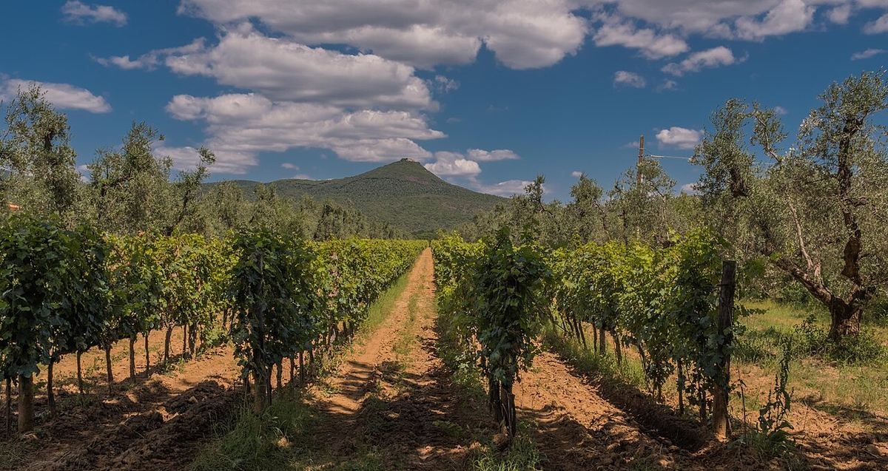

ROUGE
Bolgheri, sur la côte toscane dans la province de Livourne, est le berceau du Sassicaia et le principal foyer des rouges italiens de cépages bordelais. Sa DOC couvre surtout des assemblages de cabernet-sauvignon, de merlot et de cabernet franc.

Bolgheri est un petit village de la commune de Castagneto Carducci, relié à la côte par une célèbre allée de cyprès que le poète Giosuè Carducci évoqua dans ses vers. Jusqu'au milieu du XXe siècle, la zone n'avait pas de réputation viticole particulière. Dans les années 1940, Mario Incisa della Rocchetta planta du cabernet-sauvignon à la Tenuta San Guido pour élaborer un vin destiné à la consommation familiale ; au fil des ans, ce vin, le Sassicaia, fut commercialisé à partir du millésime 1968 et obtint une large reconnaissance internationale. Dans les années 1980 et 1990, d'autres domaines suivirent, comme Ornellaia, et la zone devint une référence des Supertoscans.
La DOC Bolgheri fut créée en 1983 pour les seuls vins blancs et rosés, si bien que les grands rouges de la zone étaient vendus comme vins de table. En 1994, elle fut réformée pour inclure les rouges et la sous-zone Bolgheri Sassicaia fut créée ; celle-ci devint en 2013 une DOC à part entière, cas singulier en Italie puisqu'elle correspond à un seul domaine. L'appellation comprend le Bolgheri Rosso et le Bolgheri Superiore, plus longuement élevé, ainsi que des blancs et des rosés.
Les vignes s'étendent sur une bande de plaine et de douces collines entre la mer Tyrrhénienne et les Colline Metallifere, qui la protègent des vents d'est. Le climat est méditerranéen, avec des étés chauds et secs, un fort ensoleillement et des brises marines qui modèrent la chaleur et favorisent l'état sanitaire du raisin. La plupart des vignes se situent à faible altitude, des abords de la côte jusqu'aux premières pentes des collines.
Les sols sont variés : près des collines dominent les argiles et les marnes calcaires, tandis que vers la côte abondent les sables et les graviers alluviaux, avec des galets roulés. Le nom de Sassicaia fait justement allusion à ces sols caillouteux, puisqu'il dérive de sasso, pierre.
Les règles permettent d'élaborer le Bolgheri Rosso avec du cabernet-sauvignon, du merlot et du cabernet franc, seuls ou assemblés, ainsi qu'avec d'autres cépages comme la syrah, le sangiovese et le petit verdot dans des proportions limitées. Les rouges présentent généralement des fruits noirs mûrs, des notes d'herbes méditerranéennes et d'épices, des tanins mûrs et un élevage en barrique. Les blancs sont surtout élaborés à partir de vermentino et de sauvignon blanc.